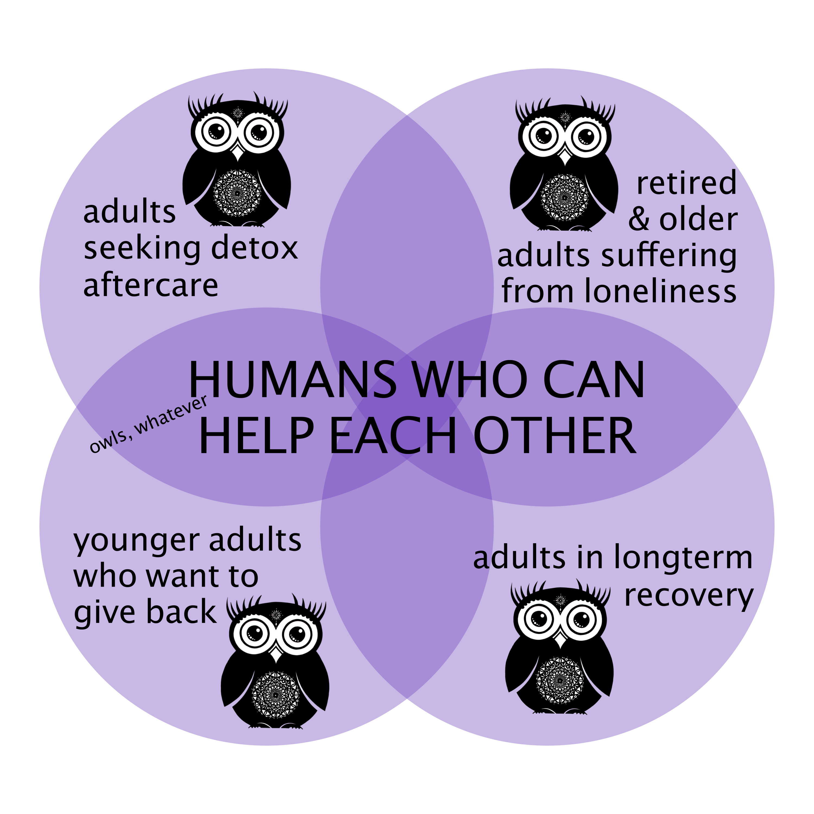

Our programs target populations of disconnected individuals and intentionally connects them to each other in virtual and real recovery environments.

By deliberately building connecting seekers and listeners, we can create financially self-sustaining communities that promote healing for everyone involved: volunteers, staff, and people actively seeking healing, alike.
Right now, we have a three-phase plan to establish those environments:
Help people figure out what psychospiritual practices resonate with them personally and help them transition into a community of their choice
Learn MoreConnect people in peer-based therapy relationships that reject the classic medicalization model and emphasizes symbiotic personal growth in both parties.
Learn MoreBuild detox aftercare facilities that are self-sustaining farming communities and which require daily practice of authentic connection experiences.
Learn More
A virtual library of activities, traditions, and practices from all over the world and human culture. The SeekConnection platform catalogs clear and unbiased information about anything that is a "connection booster;" then guides the seeker to volunteers and representatives who can teach them about it; and then connects them to a local community where they can begin to practice it.
Practices and activities that are documented in the library include but are not limited to: exercise & sports science · yoga · natural medicine · Bible study · 12-step programs · parkour · barre · animal healing · equine therapy · open-source programming · mindfulness meditation · dance · painting · martial arts · cognitive behavioral therapy · sound healing · acupuncture · massage · adventure sports · hiking · cooking · learning how to play a musical instrument
Mobile app that connect seekers to listeners and connection booster reps in their local area. Listeners can switch profile status back to seeker as needed.
Traditional Rehab
SeekListening Model
Traditional Rehab
vs.
Authentic Connection
Self-sustaining farming communities that leverage the SeekConnection library and SeekListening principles to implement a non-medicalized protocol for recovery. Seekers who live in Hubs will comply with a program that empowers them to rewire their own brains and practice the art of living life in a more connected way. Hub facilities help people transition from detox back to real life, and engage other disconnected groups of people (like retirees and grad students) to thrive together in a healthy & productive community.